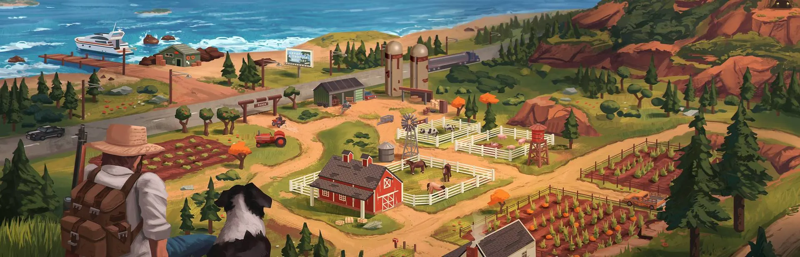
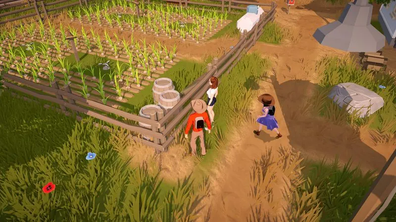
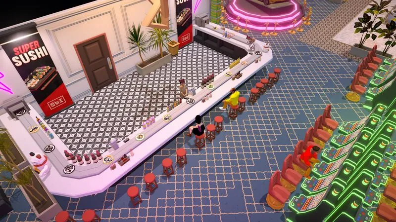
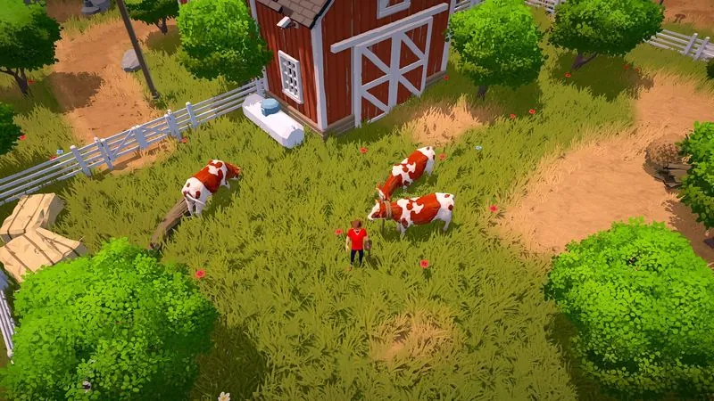

Early Access Status & Hotfix
Current build 0.8.10.455, offline and co-op requirements, vehicle recovery, fast travel, current systems, and features still planned.
Check the current build →Build your ranch with fewer guesses.
Search current-version answers for items, quests, locations, systems and problems.
Independent and evidence-tracked. Check official Steam notes.
Start with a current-build fix, inspect what supports it, or help test an open question. Unresolved community reports stay in the research queue instead of becoming guessed advice.
Search the places players need most: Leafy Market for seeds, City Hall for land and blueprints, subway stations for fast travel, safe Overnight Parking, vehicle repair and named landmarks.
Start with current build requirements and systems that are actually available. Numerical values still require a versioned screenshot or repeatable in-game observation.

Current build 0.8.10.455, offline and co-op requirements, vehicle recovery, fast travel, current systems, and features still planned.
Check the current build →
Your first days on the ranch: what to do first, how the known gameplay systems fit together, and how co-op changes your opening.
Read the guide →
The first-week traps that make new ranches slower, poorer, and harder to manage, from overplanting to messy co-op spending.
Avoid the traps →
A practical framework for comparing activities by net return, cycle time, startup cost, labor, and capacity once real values are available.
Make gold faster →
How to host a session, split roles between 1–4 ranchers, and avoid the classic co-op bottlenecks in your first week.
Squad up →
A searchable evidence tracker for confirmed crop systems, unknown launch values, and the observations needed for reliable profit comparisons.
Browse crops →
The exact formulas this site uses — profit per day, profit per active minute, and payback days — inside the merged money guide.
See the formulas →
The officially named animal roster, the limits of current source material, and a checklist for testing housing, care, products, and cost.
Review the evidence →How contracts, wells, wind turbines and solar panels supply your ranch, and how selling surplus energy is supposed to work.
Power your ranch →The confirmed construction scope, the parts system, and the roof, furniture and wall placement reports that still need testing.
Build smarter →The first official patch fixes Offline Mode loading and some failed friend-session joins. Update both players before troubleshooting co-op.
July 30My Garage recovers damaged vehicles, 17 approved parking locations prevent impound, and 15 subway stations reduce long city trips.
PracticalMines, combat, monsters, wildlife, and hunting are listed by the developer as future updates, not launch features.
Current limitsYes. It launched in Steam Early Access on July 30, 2026. Update to version 0.8.10.455 or later before troubleshooting Offline Mode or co-op.
Yes — it supports 1–4 player online co-op. See our co-op guide for role splits and hosting tips.
Yes. A free demo was available before launch. The current Early Access build is now the relevant version for guides and troubleshooting.
No — this is an unofficial fan-made guide site, not affiliated with RedPilz Studio or Trophy Games.